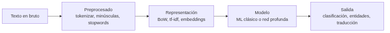
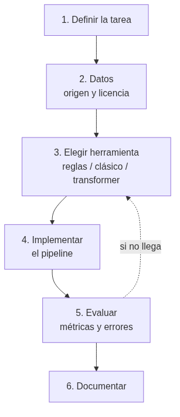

UD03 — Procesamiento del Lenguaje Natural¶
Unidad 3 · 12 h · semanas 16-19
Es el RA con más criterios de evaluación de todo el módulo: siete. Se evalúa con cuatro entregables prácticos y la prueba escrita del RA3.
1. Introducción¶
De todas las formas de inteligencia, el lenguaje es la que mejor nos permite comunicar ideas, pedir ayuda, decidir y persuadir. Conseguir que las máquinas entiendan y generen lenguaje humano es el objetivo del procesamiento del lenguaje natural (PLN): el campo de la IA que está detrás de los buscadores, los traductores, los asistentes de voz, los correctores y los chatbots.
Esta unidad tiene una particularidad que conviene saber desde el principio: de sus siete criterios, tres no se demuestran escribiendo código. Hablan del papel del lingüista, del trabajo cooperativo entre perfiles y de la formación que necesita quien investiga en PLN. No son relleno: son la mitad del RA, y en esta unidad se evalúan con una parte escrita dentro de los entregables.
El recorrido:
- Qué es el PLN y qué tareas comprende, del análisis de una palabra a la generación de texto.
- Qué se consigue hoy — el potencial, con cifras.
- La ambigüedad: por qué es el problema del lenguaje, en sus seis formas.
- Desambiguación y etiquetado morfológico (POS): cómo se ataca ese problema.
- Las demás limitaciones: falta de comprensión, sesgos, lenguas con pocos recursos, ironía.
- Cuándo es factible aplicar PLN a un problema, con la lupa del AI Act.
- Quién participa: el lingüista, la cooperación con informáticos y la formación necesaria.
- Las herramientas en Python:
nltk, spaCy, scikit-learn y transformers. - Cómo construir un sistema de PLN orientado a una tarea concreta.
Hilo conductor de la unidad
El lenguaje es la interfaz más natural entre personas y máquinas, y también la más ambigua. Primero vemos qué es el PLN y hasta dónde llega; luego por qué falla —la ambigüedad— y cómo se ataca; después quién hace falta en un proyecto y cuándo merece la pena; y por último construimos un sistema que resuelva una tarea concreta.
De dónde sale el material de esta unidad
Los bloques de ambigüedad, desambiguación y etiquetado morfológico, con sus ejemplos en español, y el itinerario de formación provienen del material del profesor, adaptados aquí. Las prácticas usan nltk, spaCy, PyTorch y modelos de Hugging Face. La referencia teórica de fondo es Speech and Language Processing de Jurafsky y Martin, de acceso libre.
2. Resultado de aprendizaje y criterios de evaluación¶
RA3 — Relaciona el procesamiento de lenguaje natural con sus aplicaciones determinando su potencial e identificando sus limitaciones.
| CE | Criterio de evaluación | Bloque |
|---|---|---|
| RA3-a | Se ha caracterizado el procesamiento de lenguaje natural. | §4, §7 |
| RA3-b | Se ha justificado el papel del lingüista en un proyecto de inteligencia artificial. | §9 |
| RA3-c | Se ha determinado el potencial de las técnicas existentes de procesamiento de lenguaje, así como sus limitaciones. | §5-8 |
| RA3-d | Se ha considerado en qué casos es factible aplicar estas técnicas en la resolución de un problema. | §9 |
| RA3-e | Se ha evaluado el trabajo cooperativo entre lingüistas e informáticos en el campo del procesamiento del lenguaje natural. | §10 |
| RA3-f | Se ha descrito la formación teórica que precisa el investigador en procesamiento del lenguaje natural. | §10 |
| RA3-g | Se ha elaborado un sistema de procesamiento de lenguaje orientado a una tarea específica. | §11-12 |
Bloque de contenidos oficial (RD 279/2021, anexo I)
El currículo llama a este bloque, textualmente, «Procesamiento del Lenguaje Natural», y le asigna estos contenidos:
- Procesamiento del lenguaje natural: Potencial y limitaciones.
- Aplicaciones del procesamiento del lenguaje natural.
Son dos contenidos para siete criterios de evaluación: el desajuste más grande de todo el módulo. Ni el papel del lingüista, ni el trabajo cooperativo, ni la formación del investigador —tres de los siete CE— tienen contenido propio en el anexo. Los desarrolla el centro (art. 3.3 del Decreto 95/2026), y es lo que hace esta unidad.
3. Objetivos de la unidad¶
| Objetivo | Al terminar la unidad serás capaz de… |
|---|---|
| O1 | Explicar qué es el PLN y situarlo entre la lingüística y la informática. |
| O2 | Describir las tareas del PLN y el pipeline típico de un sistema. |
| O3 | Valorar el potencial de las técnicas actuales con ejemplos y cifras. |
| O4 | Distinguir los seis tipos de ambigüedad y reconocerlos en frases reales. |
| O5 | Explicar cómo el etiquetado morfológico (POS) desambigua, y qué cuesta elegir el conjunto de etiquetas. |
| O6 | Identificar las demás limitaciones: falta de comprensión, sesgos, lenguas con pocos recursos, ironía. |
| O7 | Determinar cuándo es factible aplicar PLN, incluidas las restricciones del AI Act. |
| O8 | Justificar el papel del lingüista, evaluar la cooperación con informáticos y describir la formación necesaria. |
| O9 | Usar nltk y spaCy para tareas básicas de PLN en español. |
| O10 | Construir y evaluar un sistema de PLN orientado a una tarea específica. |
4. Qué es el PLN (RA3-a)¶
4.1 Definición¶
El procesamiento del lenguaje natural es el subcampo de la informática y de la IA que busca que las máquinas comprendan y se comuniquen con el lenguaje humano. Combina tres disciplinas:
| Disciplina | Qué aporta |
|---|---|
| Lingüística computacional | Los modelos del lenguaje: morfología, sintaxis, semántica, pragmática |
| Estadística y aprendizaje automático | Aprender los patrones de los textos, en vez de programar todas las reglas a mano |
| Aprendizaje profundo | Redes que aprenden representaciones del lenguaje (transformers) |
No es magia, y la distinción importa
Un buscador o un traductor no «entienden» como una persona: procesan estadísticamente el texto. Esa diferencia no es filosófica, es operativa: explica por qué fallan donde fallan, y es el hilo de todo el §6.
4.2 Los niveles del lenguaje¶
El lenguaje se analiza por capas, y cada una tiene sus tareas:
| Nivel | Qué analiza | Tarea de PLN |
|---|---|---|
| Fonética y fonología | Los sonidos | Reconocimiento de voz (ASR), síntesis (TTS) |
| Morfología | La estructura de las palabras | Stemming, lematización, etiquetado POS |
| Sintaxis | La estructura de las oraciones | Análisis sintáctico, dependencias |
| Semántica | El significado de palabras y frases | Desambiguación (WSD), entidades (NER) |
| Pragmática y discurso | El significado según el contexto | Correferencia, actos de habla, sentimiento |
Esta tabla vale también como mapa de la ambigüedad: hay ambigüedad en todos los niveles, y el §6 recorre uno a uno.
4.3 Las tareas del PLN¶
| Tarea | Qué hace | Ejemplo |
|---|---|---|
| Tokenización | Divide el texto en unidades | «Hola mundo» → [«Hola», «mundo»] |
| Etiquetado POS | Asigna categoría gramatical | «correr» → verbo |
| Entidades (NER) | Identifica nombres, lugares, fechas | «María vive en Madrid» → María: PER, Madrid: LOC |
| Análisis de sentimiento | Positivo, negativo o neutro | «¡Genial!» → positivo |
| Traducción automática | Traduce entre idiomas | ES ↔ EN |
| Resumen | Condensa documentos | Resumir un informe |
| Generación | Produce texto nuevo | Chatbots, redacción asistida |
| Respuesta a preguntas | Responde a partir de un texto | Asistentes, buscadores |

4.4 El pipeline, paso a paso¶
- Preprocesado: tokenizar, pasar a minúsculas, quitar palabras vacías (stopwords), lematizar.
- Representación: convertir el texto en números — bolsa de palabras, tf-idf, embeddings.
- Modelo: aplicar un modelo clásico o una red neuronal.
- Salida: la tarea concreta.
Esto lo usas todos los días
El corrector del móvil usa morfología y un modelo de lenguaje. El buscador clasifica tu consulta y le extrae entidades. El asistente de voz primero transcribe (ASR), luego interpreta y responde. Los tres son pipelines de PLN, con los mismos cuatro pasos.
5. El potencial (RA3-c)¶
5.1 Qué se consigue hoy¶
| Aplicación | Estado actual |
|---|---|
| Buscadores | Entienden la consulta, extraen entidades y responden directamente |
| Asistentes de voz | Transcriben, interpretan y ejecutan órdenes |
| Traducción automática | Documentos y conversación en tiempo real, con calidad funcional |
| Análisis de opinión | Valorar miles de reseñas o publicaciones automáticamente |
| Extracción de información | Leer facturas, contratos e historiales y sacar los campos (OCR + NER) |
| Chatbots | Resolver consultas frecuentes sin horario |
| Modelos generativos | Redactar, resumir, traducir y generar contenido |
Tres cifras para calibrar
- En SQuAD 2.0 (respuesta a preguntas), los mejores sistemas superan la precisión humana: EM ~91 frente a ~87.
- El análisis de sentimiento en reseñas de cine (IMDb) pasó de ~89 % en 2011 a 95-97 % con transformers.
- El ecosistema Hugging Face supera los 2 millones de modelos y 500.000 datasets públicos. Es el «almacén» del que salen los modelos de esta unidad.
5.2 Los grandes modelos de lenguaje¶
El AI Act (Reglamento UE 2024/1689) define los modelos de IA de uso general: modelos con al menos mil millones de parámetros, entrenados con autosupervisión a gran escala, que realizan con competencia una amplia variedad de tareas. Los LLM son el ejemplo típico.
Modelos de gran impacto
El AI Act presume que un modelo de uso general tiene capacidades de gran impacto cuando el cómputo acumulado de su entrenamiento supera los 10²⁵ FLOPS (art. 51.2), y entonces le exige documentación y evaluación adicionales. Se trata a fondo en la UD06.
6. La ambigüedad, el problema de fondo (RA3-c)¶
Si hay que quedarse con una sola limitación del PLN, es esta: el lenguaje es ambiguo en todos sus niveles. Múltiples interpretaciones de una misma palabra pueden arruinar la capacidad de un sistema para hacer su trabajo. Y no es un caso raro de laboratorio: aparece en frases que decimos sin darnos cuenta.
6.1 Los seis tipos de ambigüedad¶
| Tipo | Cuándo aparece |
|---|---|
| Sintáctica | La oración admite más de un análisis sintáctico: más de una regla gramatical la representa |
| Léxica y morfológica | La léxica, cuando un término aislado admite varias interpretaciones; la morfológica, cuando una palabra puede tener más de un rol o categoría dentro de la frase |
| Semántica | Un elemento de la frase se puede interpretar de varios modos |
| Pragmática | El sentido depende del contexto y de quién habla, en ese momento |
| Fonológica | Una cadena de sonidos resulta confusa |
| Funcional | Un término se usa con doble función gramatical |
Los seis, con frases reales
- Sintáctica — «Los perros y los gatos enfermos son recogidos por el servicio municipal.» ¿Se recogen todos los perros y solo los gatos enfermos, o solo los enfermos de las dos especies? Y «Compro los libros baratos»: ¿compro los baratos (adjetivo) o compro libros, que además son baratos (complemento predicativo)?
- Léxica y morfológica — «Usted aquí no pinta nada.» ¿No tiene mando o no pinta paredes? Y «Pedro y yo escribimos un cuento»: ¿ya lo escribimos o lo estamos escribiendo? La forma conjugada vale para presente y para pretérito.
- Semántica — «Pedro quiere pelearse con un italiano.» ¿Con cualquier italiano o con uno concreto?
- Pragmática — «Golpeó el armario con el bastón y lo rompió.» ¿Se rompió el bastón o el armario?
- Fonológica — «es-conde»: ¿el verbo esconder conjugado, o es + conde?
- Funcional — «He vuelto a oler.» ¿He recuperado el olfato, o he regresado a un sitio para oler algo?
6.2 Un banco de frases para probar cualquier sistema¶
Estas frases son un buen test rápido: si un sistema las resuelve, es que usa el contexto de verdad.
- Vino de la Rioja.
- Compré unos zapatos de piel de señora.
- La policía observó al sospechoso con unos prismáticos.
- El pescado está listo para comer.
- El cura recibió una cura en su habitación.
- Juan vio a Pedro enfurecido.
- Antonio no nada nada.
- No puedo ir a la fiesta porque no traje traje.
- Estaré de vacaciones solo unos días.
- El Villarreal le ganó al Valencia en su campo.
- Me quedé esperándote en el banco.
Fíjate en el patrón
Casi todas se resuelven con el contexto, no con la frase. «Vino de la Rioja» es un sustantivo o un verbo según lo que venga antes; «en su campo» depende de quién sea «su». Esa es exactamente la información que un modelo estadístico intenta capturar — y la razón de que el tamaño del contexto sea tan determinante en los transformers.
6.3 Por qué la ambigüedad no se «arregla»¶
La ambigüedad no es un error del lenguaje que se pueda corregir: es una propiedad suya, y además útil —permite ser breve, irónico o cortés—. Lo que hace un sistema de PLN es elegir la interpretación más probable dado el contexto, y por eso siempre puede equivocarse.
Forma frente a significado
Emily Bender y Alexander Koller argumentaron que un modelo entrenado solo con la forma del texto no tiene manera a priori de aprender el significado: aprende correlaciones estadísticas, no comprensión. De ahí que un modelo generativo pueda «sonar» impecable y estar equivocado. Es la limitación que hay que tener presente al leer las cifras del §5.
7. Desambiguación y etiquetado morfológico (RA3-a, RA3-c)¶
7.1 Qué es el POS tagging¶
El etiquetado morfológico —POS tagging, etiquetado léxico, desambiguación morfosintáctica— es el proceso de asignar a cada palabra de un texto su categoría gramatical, sin entrar en las relaciones sintácticas.
Y aquí está la clave: una palabra aislada suele ser ambigua respecto a su categoría; dentro de un contexto, casi siempre se puede desambiguar.
La misma palabra, tres categorías
- «Mételo en ese sobre» → nombre
- «Déjalo sobre la mesa» → preposición
- «Dame lo que te sobre» → verbo
Tres frases, la misma forma, tres categorías. Ningún diccionario resuelve esto: hace falta el contexto. Etiquetar bien la categoría es el primer paso de casi todo lo demás — de ahí que aparezca tan pronto en el pipeline del §4.4.
7.2 Elegir el conjunto de etiquetas: un compromiso¶
El conjunto de etiquetas (tagset) que se elige cambia la dificultad del problema, y hay que equilibrar dos cosas que tiran en direcciones opuestas:
- Más información: etiquetas específicas — distinguir tiempo, persona, número, género.
- Menos trabajo de desambiguación: etiquetas generales — solo «verbo», «nombre», «adjetivo».
Cuantas más etiquetas, más informativo el resultado y más difícil acertar.
| Conjunto de etiquetas | Número de etiquetas |
|---|---|
| Penn Treebank | 45 |
| Brown Corpus | 87 |
| LexEsp (PAROLE) | ~250 |
| Susanne | 350 |
Las categorías principales son las de siempre: nombres (comunes y propios), pronombres, determinantes, adjetivos, verbos, adverbios, preposiciones y conjunciones. Se dividen en clases abiertas —admiten palabras nuevas: nombres, verbos, adjetivos— y cerradas —no: preposiciones, determinantes, conjunciones—.
Por qué esto es asunto del lingüista
Decidir el tagset, escribir la guía de anotación y resolver los casos dudosos no es una tarea de programación: es lingüística aplicada, y condiciona todo lo que el modelo podrá aprender después. Es el ejemplo más concreto del RA3-b, y por eso este bloque va justo antes del §9.
7.3 Cómo se etiqueta en la práctica¶
| Enfoque | Cómo funciona | Dónde encaja |
|---|---|---|
| Basado en reglas | Reglas escritas a mano sobre el contexto | Dominios muy acotados; didáctico |
| Modelos de Markov (HMM, TnT) | Probabilidad de una secuencia de etiquetas dado el texto | El clásico; es lo que se practica con el corpus cess_esp de nltk |
| Modelos neuronales | La categoría sale del modelo del lenguaje, con el contexto completo | spaCy y transformers: lo que se usa hoy |
En la práctica de la unidad se hacen los tres: reglas y HMM con nltk, y el enfoque neuronal con spaCy.
8. Las demás limitaciones (RA3-c)¶
8.1 Falta de comprensión real¶
Los modelos generan respuestas plausibles sin comprender: no verifican hechos, no razonan sobre el mundo y pueden alucinar — inventar datos con total seguridad. En cualquier tarea con consecuencias, la salida se verifica.
8.2 Sesgos¶
Los modelos aprenden de los textos que hay, y esos textos llevan sesgos históricos y sociales:
- Sesgo de género en los embeddings: «médico → hombre», «enfermera → mujer».
- Sesgos raciales, étnicos y culturales en los datos de entrenamiento.
- El AI Act advierte de que los sesgos pueden perpetuarse y amplificarse en bucles de retroalimentación.
Inferir emociones está prohibido en dos contextos
El AI Act prohíbe los sistemas que infieren el estado emocional en el trabajo y en centros educativos: la base científica es débil —la expresión de las emociones varía entre culturas— y su uso ahí es discriminatorio. Es un límite legal, no solo técnico, y afecta directamente a lo que se puede construir con análisis de sentimiento.
8.3 Lenguas con pocos recursos¶
Casi todos los modelos se entrenan con textos mayoritariamente en inglés. En lenguas con menos datos, las técnicas estadísticas clásicas pueden aún superar a las neuronales, que solo dan buenos resultados a partir de decenas de miles de tokens. No es un detalle menor: decide si un proyecto en una lengua minoritaria es viable.
8.4 Ironía y sarcasmo¶
«¡Qué buena idea, se me ha caído el móvil al agua!» es literalmente positivo y pragmáticamente negativo. Es ambigüedad pragmática pura, y los modelos fallan a menudo.
9. Cuándo es factible aplicar PLN (RA3-d)¶
9.1 Cinco criterios de decisión¶
| Criterio | Pregunta guía |
|---|---|
| Tarea clara y acotada | ¿Qué salida exacta quiero: clasificar, extraer, traducir, resumir? |
| Datos disponibles | ¿Hay textos suficientes y representativos? ¿Están anotados? |
| Dominio con vocabulario conocido | ¿El texto es de un ámbito concreto — médico, legal, atención al cliente? |
| Calidad esperada realista | ¿Acepto un 5-10 % de error? ¿Cuánto cuesta cada error? |
| Regulación aplicable | ¿Está el uso prohibido o restringido por el AI Act? |
9.2 Factible y no factible¶
| Factible hoy (bajo riesgo) | No factible o prohibido |
|---|---|
| Convertir datos no estructurados en estructurados | Inferir emociones en el trabajo o la educación |
| Clasificar documentos y detectar duplicados | Extracción no selectiva de rostros de internet |
| Mejorar el registro o el lenguaje de un documento | Manipulación subliminal del comportamiento |
| Traducción funcional de documentos | Comprensión profunda con inferencia abierta |
| Buscar y vincular datos en archivos | Respuesta fiable en dominios de alto riesgo sin verificación |
| Análisis de sentimiento en un dominio acotado | Detección de sarcasmo con alta precisión |
El AI Act como herramienta de diseño
El considerando 53 enumera tareas de PLN de bajo riesgo —procesamiento delimitado: transformar datos, clasificar, detectar duplicados, mejorar el lenguaje, traducción funcional— y el artículo 5 prohíbe prácticas concretas. Leídos juntos, son una lista de comprobación excelente para decidir qué construir antes de empezar. Eso es el CE d.
10. Quién hace un proyecto de PLN (RA3-b, RA3-e, RA3-f)¶
Aquí están tres de los siete criterios de este RA, y son los que un material puramente técnico suele resolver en un párrafo. No se demuestran con código, pero deciden si un proyecto de PLN sale bien o sale caro.
10.1 Qué aporta el lingüista (RA3-b)¶
| Aportación | En qué consiste |
|---|---|
| Anotación de datos | Etiquetar entidades, sentimiento o categorías en los textos de entrenamiento |
| Diseño del conjunto de etiquetas y de la guía | Definir el tagset del §7.2 y las reglas para aplicarlo de forma coherente |
| Recursos lingüísticos | Construir corpus y árboles sintácticos (treebanks), un trabajo que puede llevar años |
| Gramáticas y reglas | Las reglas morfológicas y sintácticas de la rama simbólica del PLN |
| Evaluación y análisis de errores | Explicar por qué falla un modelo: ambigüedad, registro, dominio |
Las anotaciones deciden las predicciones
La calidad del etiquetado condiciona directamente lo que el modelo puede aprender: con etiquetas malas o inconsistentes entre anotadores, el modelo aprende esa inconsistencia. Y esto no se arregla con más datos ni con un modelo mejor.
Es la razón de fondo del CE b: el lingüista no es un apoyo del proyecto, es parte de la tubería de datos. Volviendo al §7.2: quien decide si el tagset tiene 45 etiquetas o 250 está decidiendo el techo de precisión del sistema.
10.2 El trabajo cooperativo (RA3-e)¶
El PLN es interdisciplinar por definición: lingüistas, informáticos y, según el proyecto, psicólogos o expertos en lógica. Dos casos reales que muestran cómo se hace bien:
- Meta NLLB — traducción entre 200 idiomas. Trabajaron con hablantes nativos para anotar y evaluar, y consiguieron +44 % de BLEU medio además de controlar la toxicidad de las traducciones. Sin hablantes nativos no había forma de evaluar la mayoría de esos idiomas.
- Masakhane — PLN para lenguas africanas. Más de 1.000 participantes de 30 países, y una regla explícita: los lingüistas locales no son «solo anotadores», son investigadores. Rechazan la investigación paracaidista: entrar, tomar los datos y marcharse sin dejar capacidad local.
| Lo que se gana cooperando | Lo que cuesta |
|---|---|
| Datos y evaluación de mucha más calidad | Vocabularios y métodos distintos: hay que traducirse |
| Cobertura de lenguas minoritarias | La anotación es lenta y cara |
| Mejor ciencia y sistemas más justos | Riesgo de usar a las comunidades como proveedores de datos |
El riesgo tiene nombre
La cooperación puede degenerar en extracción: una empresa del norte global obtiene datos anotados baratos y publica; la comunidad que los produjo no queda con capacidad ni con crédito. Es el mismo problema que en la UD06 aparece como el trabajo invisible detrás de la IA. Por eso el CE e dice «evaluar» el trabajo cooperativo, no solo describirlo: hay formas mejores y peores de hacerlo.
10.3 La formación del investigador (RA3-f)¶
El perfil combina tres patas, y ninguna sobra:
| Pata | Contenidos |
|---|---|
| Lingüística | Morfología, sintaxis, semántica, pragmática y discurso |
| Estadística y aprendizaje automático | Probabilidad, modelos, métricas y evaluación |
| Informática y métodos formales | Algoritmos, estructuras de datos, programación |
El itinerario recomendado, en este orden:
- Jurafsky y Martin, Speech and Language Processing — la referencia clásica, de acceso libre. Da la base teórica y el vocabulario.
- El manual de NLTK — el mismo camino, pero con las manos: cada paso del pipeline, a mano.
- spaCy, en inglés y en español — el salto a herramientas de producción.
- Modelos neuronales y transformers — Hugging Face, y de ahí a plataformas de inferencia si hace falta desplegar.
Perfiles que no existían hace cinco años
Junto al lingüista computacional clásico han aparecido el anotador o evaluador especializado —con formación en derecho, medicina o ciencia, porque hay que entender el texto para etiquetarlo bien—, el perfil de prompt engineer, en evolución hacia LLMOps, y el evaluador de sesgos y ética de modelos. Los tres parten de la misma base: lingüística más técnica.
Cómo se evalúan estos tres criterios en esta unidad
No con un examen aparte: con la parte escrita de los entregables EX2 y EX5. En cada uno se pide justificar qué decisiones tomaría un lingüista en ese problema concreto, qué aporta cada perfil y qué formación haría falta. Está en la rúbrica, y cuenta.
11. Las herramientas en Python (RA3-c, RA3-g)¶
Dos entornos, y conviene saber cuál toca
Esta unidad usa las librerías más pesadas del módulo. La regla:
- En el contenedor de la unidad (
Dockerfileydocker-compose.ymlde la carpeta):nltk, spaCy, scikit-learn,gensim,textblob. Todo lo que no entrena redes grandes. - En Colab: todo lo que use
transformers, entrenamiento de modelos o audio. Ahí hay GPU, y afinar un DistilBERT en CPU es cuestión de horas.
Cada notebook lo indica en su primera celda.
11.1 NLTK, para entender¶
NLTK es una plataforma de enseñanza e investigación con más de 50 corpus y recursos léxicos, como WordNet. Su virtud es que es transparente: cada paso del procesamiento se hace a mano, y por eso es la herramienta con la que se aprende.
1 2 | |
1 2 3 4 5 6 7 8 9 10 11 12 13 | |
El pipeline de NLTK, paso a paso
- Tokenizar:
word_tokenizesepara palabras y signos. - Limpiar: se descartan artículos, preposiciones y palabras sin contenido.
- Normalizar: el stemming recorta a una raíz aproximada («transformando» → «transform»); la lematización da el lema real («transformando» → «transformar»). El primero es rápido y tosco; la segunda necesita un diccionario.
- Enriquecer: etiquetar POS (
pos_tag), detectar entidades (ne_chunk), contar frecuencias (FreqDist) o buscar concordancias (concordance).
11.2 spaCy, para producir¶
1 2 | |
1 2 3 4 5 6 7 8 9 10 11 | |
El pipeline de spaCy ejecuta toda la cadena de una pasada:
En una frase corriente, el analizador sintáctico puede encontrar miles de análisis posibles, y spaCy elige el más probable con su modelo estadístico. Es el §6 en acción: la ambigüedad no se elimina, se decide.
NLTK o spaCy: no compiten
NLTK para aprender — cada paso a mano, todo visible. spaCy para producir — un objeto nlp, modelos preentrenados, mucho más rápida y con 25 idiomas. En los talleres se empieza con NLTK y se pasa a spaCy, en ese orden y por ese motivo.
Por qué las entidades dan dinero
La extracción de entidades es la base de leer facturas, contratos o historiales: el sistema encuentra fechas, importes, nombres y organizaciones sin que nadie los marque a mano. Es una de las aplicaciones más rentables del PLN, y de las menos vistosas.
11.3 Análisis de sentimiento¶
Con scikit-learn, que funciona en español y sin GPU:
1 2 3 4 5 6 7 8 9 10 11 12 13 | |
El detalle que rompe el ejemplo en español
TfidfVectorizer(stop_words=...) solo acepta la cadena 'english'. Para español hay que pasar una lista —stopwords.words('spanish')— o no pasar nada y usar max_df. Si se escribe stop_words='spanish', el error es poco claro.
11.4 Transformers y Hugging Face¶
Los modelos Transformer se usan con la librería transformers y sus pipelines. Funcionan en CPU, pero entrenarlos o afinarlos, no: eso va a Colab.
1 2 3 4 5 | |
DistilBERT, y por qué se usa aquí
DistilBERT tiene un 40 % menos de parámetros y es un 60 % más rápido que BERT, conservando el 97 % de su capacidad. Por eso es el modelo de los notebooks de la unidad: cabe en una sesión de clase. El entregable EX4 lo afina para reseñas de cine, que es transfer learning de manual.
12. Construir un sistema orientado a una tarea (RA3-g)¶
12.1 La metodología, en seis pasos¶
- Definir la tarea: qué entra, qué sale y para quién.
- Conseguir o anotar los datos: origen, formato, tamaño y licencia.
- Elegir la herramienta: reglas, modelo clásico o transformer, según datos y recursos.
- Implementar el pipeline: preprocesado → representación → modelo → salida.
- Evaluar sobre datos no vistos, y analizar los errores — no solo mirar la métrica.
- Documentar: origen de los datos, licencia, decisiones y limitaciones.

El paso 5 es el que más se salta
Medir la exactitud es fácil; mirar los errores es lo que enseña. Casi siempre se agrupan: un registro que no estaba en el entrenamiento, un tipo de ambigüedad concreta, un vocabulario de dominio. Y eso apunta a qué hacer después — que es volver al paso 3, no al paso 4.
12.2 La progresión de los notebooks¶
Los notebooks de la unidad recorren esa metodología de menos a más, y conviene verlos como una escalera, no como piezas suextas:
| Notebook | Qué construye | Representación |
|---|---|---|
N01 · introducción al PLN | Tokenizar, stopwords, BoW y tf-idf con nltk | Cuenta de palabras |
N02 · clasificación con PyTorch | Un clasificador de texto entrenado desde cero | De BoW a word embeddings |
N03 · modelos de lenguaje | Afinar DistilBERT para sentimiento | Embeddings contextuales |
N04 · spaCy | El pipeline completo: POS, dependencias, entidades | Modelo preentrenado |
N05 · nltk y Python | POS tagging con el corpus cess_esp y validación cruzada | Etiquetado estadístico |
Y los cuatro entregables aplican cada nivel a un problema propio:
| Entregable | Tarea | Qué demuestra |
|---|---|---|
EX1 | Representación de texto: tokenizar, stopwords, BoW y tf-idf | Los fundamentos, por dos caminos (NLTK y TextBlob) |
EX2 | Clasificar preguntas repitiendo el proceso de N02 | Construir un clasificador propio |
EX3 | Etiquetado morfosintáctico del corpus cess_esp con NLTK | Trabajar con anotación real en español |
EX4 | Afinar DistilBERT para reseñas de cine | Transfer learning a una tarea nueva |
EX5 | Asistente virtual por voz | Un sistema de punta a punta, con audio |
Ejemplo guiado: un clasificador de reseñas en seis pasos
1 · Tarea: clasificar una reseña de restaurante como positiva o negativa. 2 · Datos: 60 reseñas anotadas a mano, 40 para entrenar y 20 para probar; licencia propia. 3 · Herramienta: scikit-learn con tf-idf, porque con 60 ejemplos un transformer no aporta nada. 4 · Implementar: TfidfVectorizer → LogisticRegression. 5 · Evaluar: exactitud en las 20 de prueba y leer los dos errores — casi siempre son ironía o una negación. 6 · Documentar: origen, licencia y el límite obvio (60 ejemplos de un solo dominio).
Fíjate en el paso 3: la herramienta se elige por los datos que hay, no por lo moderna que sea. Con 60 ejemplos, tf-idf gana.
13. Puntos clave de la unidad¶
- El PLN busca que las máquinas comprendan y se comuniquen con el lenguaje humano, combinando lingüística computacional, estadística y aprendizaje profundo.
- Sus tareas van de la tokenización al etiquetado POS, entidades, sentimiento, traducción, resumen y generación; el pipeline típico es preprocesado → representación → modelo → salida.
- El potencial es alto y medible: en respuesta a preguntas los sistemas superan la precisión humana (SQuAD 2.0), y el sentimiento en reseñas ronda el 95-97 %.
- La ambigüedad es el problema de fondo, y tiene seis formas: sintáctica, léxica y morfológica, semántica, pragmática, fonológica y funcional. No se elimina: se decide con el contexto.
- El etiquetado POS es la herramienta central de desambiguación. Elegir el tagset es un compromiso: más etiquetas = más información y más difícil acertar (45 en Penn Treebank, 350 en Susanne).
- Las otras limitaciones: forma ≠ significado (Bender y Koller), alucinaciones, sesgos, lenguas con pocos recursos, ironía y sarcasmo.
- El AI Act sirve de herramienta de diseño: su considerando 53 lista PLN de bajo riesgo y su artículo 5 prohíbe prácticas concretas, como inferir emociones en el trabajo o la educación.
- El lingüista no es un apoyo: diseña el tagset, la guía de anotación y los recursos. Las anotaciones deciden las predicciones, y eso no se arregla con más datos.
- La cooperación entre perfiles se evalúa, no solo se describe: NLLB con hablantes nativos (+44 % BLEU) y Masakhane con 1.000 participantes son ejemplos de hacerlo bien; la investigación paracaidista, de hacerlo mal.
- La formación combina lingüística, estadística e informática, con un itinerario claro: Jurafsky → NLTK → spaCy → transformers.
- NLTK para aprender, spaCy para producir; scikit-learn cuando hay pocos datos y transformers cuando hay muchos y GPU. La herramienta se elige por los datos que hay.
- Construir un sistema son seis pasos, y el que más se salta es el quinto: mirar los errores, no solo la métrica.
14. Glosario¶
| Término | Definición |
|---|---|
| PLN | Procesamiento del lenguaje natural |
| Token | Unidad mínima en que se divide un texto: palabra, signo, subpalabra |
| Tokenización | Dividir el texto en tokens |
| Stopwords | Palabras vacías (artículos, preposiciones) que se descartan |
| Stemming | Recortar la palabra a una raíz aproximada |
| Lematización | Reducir la palabra a su lema real, con diccionario |
| POS tagging | Asignar a cada palabra su categoría gramatical |
| Tagset | El conjunto de etiquetas gramaticales que se usa |
| Penn Treebank | Tagset de referencia en inglés: 45 etiquetas |
| PAROLE / LexEsp | Tagset de referencia en español: ~250 etiquetas |
| Categoría abierta / cerrada | Admite palabras nuevas (nombres, verbos) o no (preposiciones) |
| Ambigüedad sintáctica | La oración admite más de un análisis sintáctico |
| Ambigüedad léxica | Un término aislado admite varias interpretaciones |
| Ambigüedad morfológica | Una palabra puede tener más de una categoría en la frase |
| Ambigüedad semántica | Un elemento se puede interpretar de varios modos |
| Ambigüedad pragmática | El sentido depende del contexto y del hablante |
| Ambigüedad fonológica | Una cadena de sonidos resulta confusa |
| Ambigüedad funcional | Un término con doble función gramatical |
| Desambiguación | Elegir la interpretación correcta según el contexto |
| WSD | Desambiguación del sentido de las palabras |
| NER | Reconocimiento de entidades nombradas |
| Análisis de dependencias | Determinar las relaciones sintácticas entre palabras |
| Correferencia | Saber a qué se refiere un pronombre |
| Bolsa de palabras (BoW) | Representar un texto por la cuenta de sus palabras, sin orden |
| tf-idf | Pesar cada palabra por su frecuencia relativa en el documento y en el corpus |
| Word embedding | Representar palabras como vectores densos con significado |
| Embedding contextual | El vector de una palabra cambia según su contexto (BERT) |
| Transformer | Arquitectura basada en atención, base de los modelos actuales |
| BERT / DistilBERT | Modelo de lenguaje bidireccional, y su versión reducida |
| Transfer learning | Adaptar un modelo ya entrenado a una tarea nueva |
| Fine-tuning | Afinar los pesos de un modelo preentrenado con datos propios |
| LLM | Modelo grande de lenguaje |
| Modelo de uso general | En el AI Act, modelo con ≥ mil millones de parámetros y autosupervisión a gran escala |
| Alucinación | Que el modelo genere información falsa con apariencia de certeza |
| NLTK | Biblioteca de PLN orientada a la enseñanza y la investigación |
| spaCy | Biblioteca de PLN orientada a producción |
| WordNet | Base de datos léxica de relaciones entre significados |
cess_esp | Corpus del español anotado, incluido en NLTK |
| HMM / TnT | Modelos de Markov para etiquetado morfológico |
| Hugging Face | Repositorio de modelos y datasets de PLN |
| SQuAD | Conjunto de referencia para respuesta a preguntas |
| BLEU | Métrica de calidad de traducción automática |
| Corpus | Colección de textos usada para entrenar o evaluar |
| Treebank | Corpus anotado con árboles sintácticos |
| Guía de anotación | Documento que fija cómo etiquetar de forma coherente |
| Lengua con pocos recursos | Idioma con pocos datos disponibles para entrenar |
15. FAQ¶
¿El PLN «entiende» de verdad el lenguaje?
No. Procesa estadísticamente: aprende qué palabras y estructuras aparecen juntas. Bender y Koller lo argumentaron con precisión: un modelo entrenado solo con la forma del texto no tiene manera a priori de aprender el significado. Por eso puede escribir un párrafo impecable y equivocarse en el dato.
Si la ambigüedad no se puede eliminar, ¿cómo funciona nada?
Porque el sistema no necesita acertar siempre: necesita acertar lo suficiente para la tarea. Elige la interpretación más probable según el contexto, y en la mayoría de los casos es la buena. El problema aparece cuando el coste de equivocarse es alto — y ahí entra el §9.
¿Cuántas etiquetas POS conviene usar?
Las mínimas que resuelvan tu problema. Con 45 (Penn Treebank) se acierta más; con 250 (PAROLE) se sabe mucho más de cada palabra pero se falla más. Si solo necesitas distinguir nombres de verbos, usar 250 etiquetas es tirar precisión a la basura.
¿Para qué necesito un lingüista si tengo un modelo preentrenado?
Para tres cosas que el modelo no hace: decidir qué etiquetar y cómo (el tagset y la guía), anotar de forma coherente los datos de tu dominio, y explicar por qué falla cuando falla. Un modelo preentrenado te ahorra entrenar, no te ahorra entender tu problema.
¿NLTK o spaCy?
Las dos, en este orden. NLTK para aprender, porque cada paso es visible y se hace a mano. spaCy para trabajar, porque un solo objeto ejecuta todo el pipeline con modelos preentrenados y es mucho más rápida.
¿Puedo hacer análisis de sentimiento para detectar el ánimo de mis empleados?
No. El AI Act prohíbe los sistemas que inferen el estado emocional en el trabajo y en centros educativos: la base científica es débil y el uso es discriminatorio. Es un límite legal, y es exactamente el tipo de decisión que pide el CE d.
¿Hace falta GPU para esta unidad?
Para la mitad, no: nltk, spaCy, scikit-learn y las representaciones de texto van en el contenedor. Para afinar DistilBERT y para el notebook de audio, sí — y por eso esos van en Colab, que la da gratis.
¿Por qué mi modelo va peor en español que en inglés?
Porque casi todos se entrenan con textos mayoritariamente en inglés. En español hay recursos buenos, pero menos; en lenguas minoritarias, muy pocos. En esos casos, las técnicas estadísticas clásicas pueden superar a las neuronales, que necesitan decenas de miles de tokens para despegar.
¿Qué diferencia hay entre stemming y lematización?
El stemming recorta a una raíz aproximada sin diccionario: rápido y tosco («transformando» → «transform», que no es una palabra). La lematización devuelve el lema real usando un diccionario: más lento y correcto («transformando» → «transformar»). Para buscar, suele bastar el primero; para analizar, hace falta el segundo.
16. Sesiones¶
| Semana | Horas | Contenido | CE |
|---|---|---|---|
| 16 | 3 | Qué es el PLN, tareas y pipeline; el potencial con cifras. N01 (nltk) y EX1 | RA3-a, RA3-c |
| 17 | 3 | La ambigüedad en sus seis formas; desambiguación y POS tagging. N04 (spaCy) y N05 (cess_esp); Taller 1 | RA3-a, RA3-c |
| 18 | 3 | Las demás limitaciones; cuándo es factible con la lupa del AI Act. N02 y EX2; Taller 2 | RA3-c, RA3-d, RA3-g |
| 19 | 3 | El lingüista, la cooperación y la formación; sistemas orientados a tarea. N03, EX4 y EX5; evaluación | RA3-b, RA3-e, RA3-f, RA3-g |
Sobre el reparto
Los tres CE «humanos» se tratan en la semana 19, cuando el alumnado ya ha peleado con los datos y con la anotación: así la discusión sobre el papel del lingüista deja de ser abstracta. Y el material de ampliación (el clasificador de géneros musicales) no cuenta horas.
17. Recursos¶
- Diapositivas
- Ejercicios de la unidad
- Talleres: T01 · del texto al vector · T02 · un sistema de PLN de punta a punta
- Actividades guiadas — 5 notebooks
- Actividades entregables — 5 notebooks evaluables, con sus rúbricas
- Notebooks — todos los de la unidad, con descarga y apertura en Colab, en el menú «Notebooks»
Referencias de la unidad
- Speech and Language Processing — Jurafsky y Martin (acceso libre)
- Introduction to Natural Language Processing — Eisenstein
- NLTK Book · spaCy · Usage · Hugging Face
- Bender y Koller (2020), Climbing towards NLU
- Meta NLLB · Masakhane
- Reglamento (UE) 2024/1689 · AI Act — considerando 53 y art. 5
- SQuAD · Penn Treebank POS tags
18. Evaluación¶
| Peso | Instrumento |
|---|---|
| 40 % actividades | Media de los cinco entregables (EX1-EX5); cada uno con su rúbrica sobre 10 |
| 60 % prueba escrita | Prueba del RA3 en Moodle: preguntas de test y de desarrollo sobre el contenido de la unidad |
- La normativa exige alcanzar todos los RA del módulo para superarlo (art. 5.1 de la Orden 8/2025: la calificación del módulo está «en función de la consecución de los RA»; y las Instrucciones 26-27, que impiden calificar positivamente un módulo con RA no superados). El centro concreta ese mandato exigiendo ≥ 5 en cada RA.
EX2yEX5llevan una parte escrita que cubre los criterios b, e y f: el papel del lingüista, la cooperación entre perfiles y la formación necesaria. Está en su rúbrica y cuenta.
| CE | Dónde se trabaja | Con qué se evalúa |
|---|---|---|
| RA3-a | §4, §7 | Taller 1, EX1, prueba del RA3 |
| RA3-b | §10.1 | Parte escrita de EX2 y EX5, prueba del RA3 |
| RA3-c | §5-8 | EX1, EX4, Talleres 1 y 2, prueba del RA3 |
| RA3-d | §9 | Taller 2, prueba del RA3 |
| RA3-e | §10.2 | Parte escrita de EX2 y EX5, prueba del RA3 |
| RA3-f | §10.3 | Parte escrita de EX2 y EX5, prueba del RA3 |
| RA3-g | §11-12 | EX2, EX4, EX5, Taller 2 |
19. Recuperación¶
Actividades del programa de recuperación individual por RA (art. 14.4 de la Orden 8/2025): construir un sistema de PLN orientado a una tarea distinta —otro dominio, otro tipo de salida— y las pruebas de autoevaluación de la unidad.